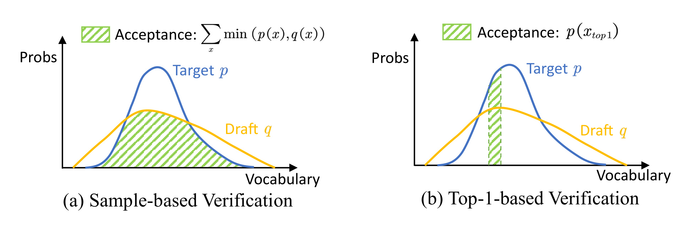
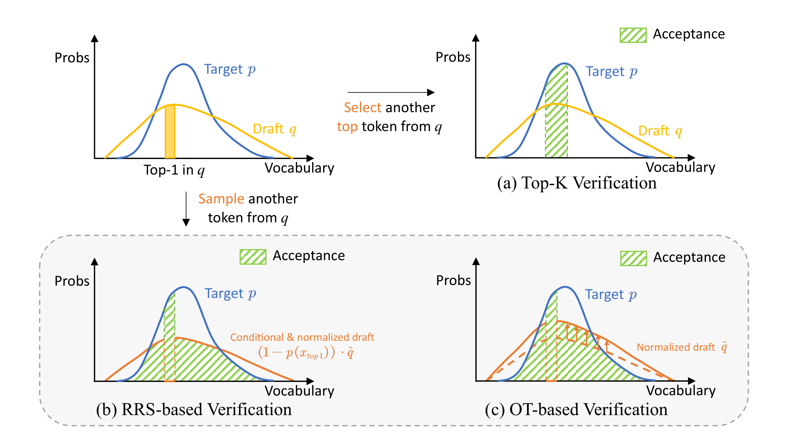
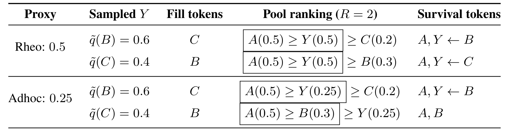
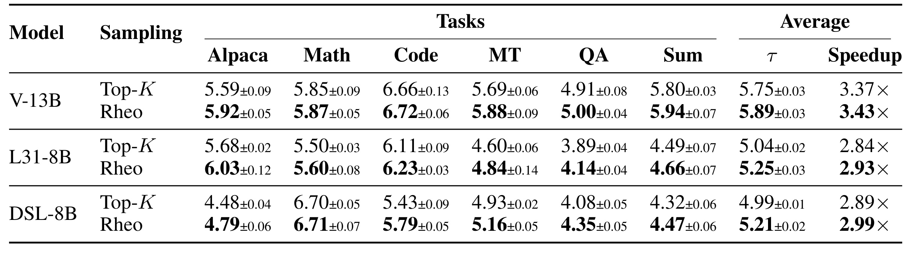
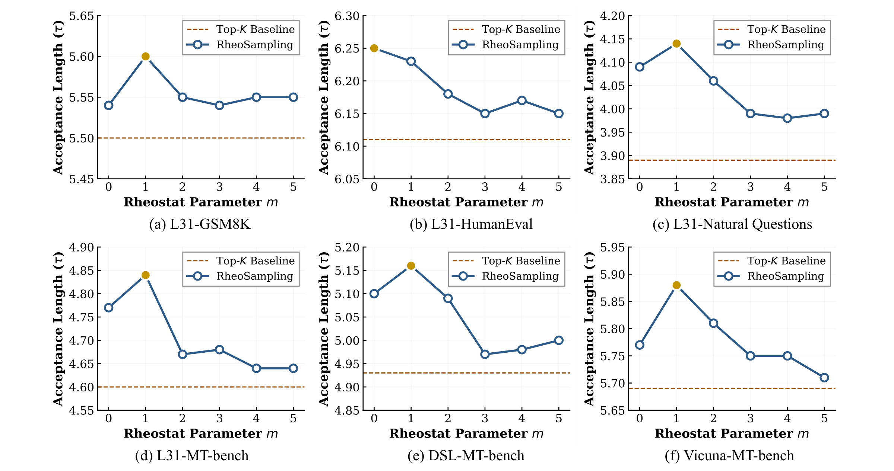
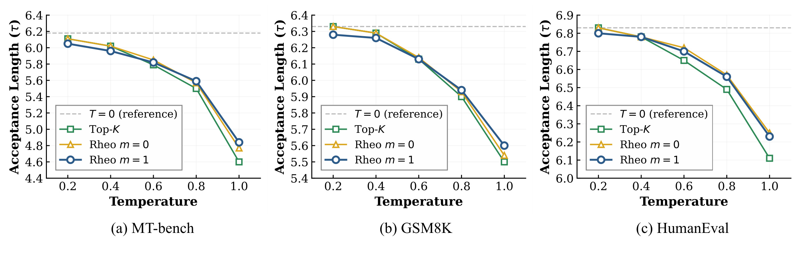
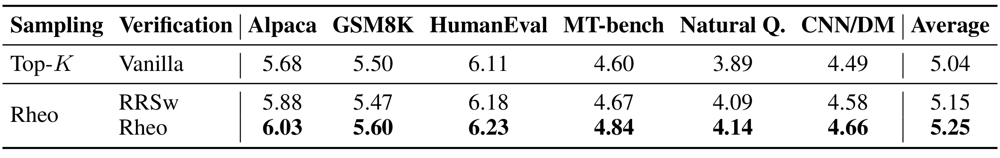
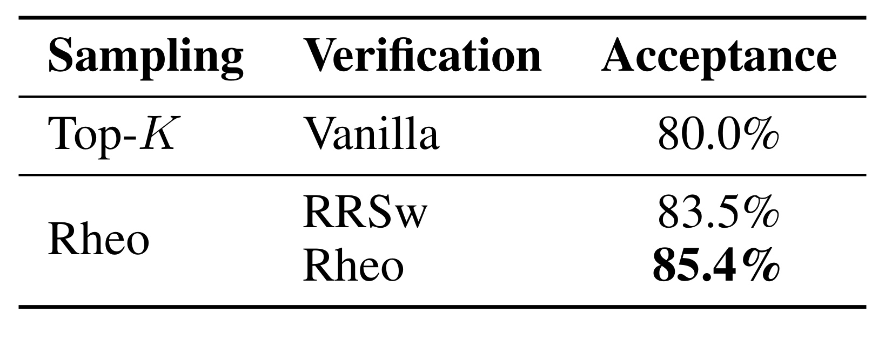
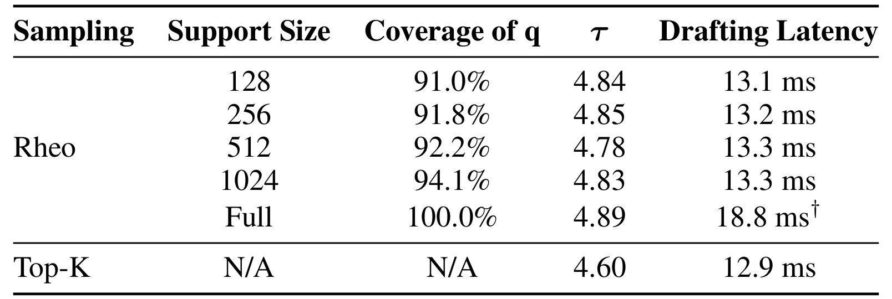

RheoSampling：在随机动态树推测解码中化解 one-hot 困境
论文： RheoSampling: Resolving the One-Hot Dilemma in Stochastic Dynamic-Tree Speculative Decoding
作者： Qiao Hu、Yepeng Weng、Bo Zhang、Takehisa Yairi；前两位为共同一作。
机构： 第一作者来自中国科学院数学与系统科学研究院 NCMIS；合作机构包括东京大学、联想 AI Technology Center、中国科学院大学。
公开信息： arXiv v1，2026 年 9 月 18 日；预印本，未核验会议录用。
论文入口： arXiv:2609.21827
代码状态： 未核验独立代码入口。本文精读覆盖原文 20 页，含附录 A–D；资料核验日期为 2026 年 9 月 22 日。
动态树把同一概率同时用于构树和验证两个冲突任务：确定性扩展让随机解码的实际草稿提案退化为点质量，因而丢失尾部分布的接受机会。
1. 背景和问题
这句话对应论文摘要和引言的核心问题。理解它需要先把“模型给出的概率分布”“实际怎样挑选候选”和“用什么分布验证候选”区分开来。大模型自回归生成的成本来自连续的前向调用，每一个新词元依赖此前已经确定的前缀。推测解码让较便宜的草稿模型先提出多个未来词元，再让较贵的目标模型一次检查它们。如果草稿与目标足够一致，一次目标前向可以确认多个词元，减少串行等待。但要保证最终文本仍服从目标模型的随机生成分布，验证阶段必须依据实际产生候选的概率，而不能只依据草稿网络输出的概率张量。
树状推测进一步把多个可能的后续组织成分支。同一层可以包含若干不同词元，目标模型通过树状注意力同时检查多条路径，增加走中一条较长路径的机会。固定树容易分析随机采样，却不能根据当前上下文灵活决定计算预算投向何处。EAGLE-2/3 一类动态树则先扩展、再重排、最后按全局预算裁剪：每个父节点取最高概率的若干词元，用沿路径的概率乘积作为分数，再挑高分节点继续扩展。这样能把有限验证资源集中在草稿认为可靠的路径上，尤其适合贪心解码。
矛盾出现在温度大于零时。确定性选中的词元虽然在网络分布中可能只有某个有限概率，但它在这个选取规则下被提出的概率实际上是一。验证器若把它当作普通随机样本，就会使用错误的提案概率。正确处理是把这种提案看成点质量，再让目标模型决定是否接受。这个做法仍能维持目标分布，却无法充分利用草稿模型对其余词元的概率判断。论文所谓 one-hot 困境描述的是选取机制导致提案分布退化，并不是草稿模型的 softmax 本身变成了 one-hot，也不是原版动态树必然产生有偏输出。

原文 Figure 1 用蓝色目标分布和黄色草稿分布比较两种接受机制。左图的绿色面积覆盖两个分布在整个词表上的重叠；右图只保留最高概率候选所在位置的目标质量。横轴虽然画成连续曲线以便理解，实际对象仍是离散词表。它说明草稿模型预测得“总体很像”与“只挑一个最高概率词元能被接受多少次”是两回事。即使草稿和目标完全一致，只要目标不是一个确定点，固定挑选最高概率词元也不能得到百分之百的单候选接受率；从草稿分布真正采样则可以利用全部重叠质量。这是为什么提升草稿训练质量之后，确定性候选策略仍可能留下无法消除的接受率缺口。
需要进一步区分单次候选接受率和整轮平均接受长度。单层的重叠增加，通常有利于长路径被接受，但动态树还会改变后续节点的上下文、候选数量和深度分配。因此不能直接把图中的面积差换算成相同百分比的端到端加速。每轮还要支付草稿前向、抽样、树构造、目标验证和缓存操作的成本。本文的创新先解决概率正确性，再测试这些操作的净收益；两步证据必须同时成立，单靠示意图并不能说明系统一定更快。
最直观的修补办法是把 top-K 改成随机抽取 K 个词元，再继续按原始草稿概率给候选排序。然而论文指出，这会引入更深的问题：如果被抽中的词元只有在自己的概率足够大时才活过全局裁剪，那么“存活后的样本分布”已经不同于裁剪前的抽样分布。比如低概率词元经常被删掉，高概率词元经常留下，验证器却仍假定每个存活词元按原分布被抽中，拒绝采样的等式便不再成立。问题不仅是尾部探索不足，而是选择偏差会破坏无损性。动态树的后代又依赖被抽到的词元，使得这种偏差不能只在一个局部候选池内处理。
RheoSampling 的切入点是给一个随机候选两种独立用途的概率身份：用于竞争树位置的是代理概率，用于计算接受率的是实际抽样概率。代理分数不是对目标概率的新估计，也不需要解释为经过归一化的提案分布；它只负责把随机槽放在合适的排序位置。实际抽样分布则完整保留下来，由验证器负责恢复目标概率。这样既保留动态树对上下文的适应，又给多候选验证算法一个真正随机的候选。论文用“调节器”比喻参数，因为随机槽插入得越靠前，越容易存活，也越可能改变原来的高分路径结构。
对大模型应用而言，这项工作特别对应开放式回答、解释生成和带温度的推理，而不应把随机解码的收益直接外推到贪心服务。对推荐系统而言，最接近的迁移对象是生成式推荐或基于大模型的推荐解释：若系统希望候选保持给定随机分布，同时又要用分数筛选有限的扩展预算，就必须辨明计算预算分数和真实提案概率。传统 CTR 排序并没有同样的逐词元拒绝采样接口，不能直接照搬本文的验证公式。本文也未报告推荐指标、点击率或广告收益，后续迁移需要另行验证。
还有一个容易误读的边界：“无损”说的是最终生成分布与目标模型一致，不是每次随机运行输出逐字一致，也不是目标模型的回答一定正确。两套实现使用不同随机数时当然可以生成不同文本；理论要求的是对所有可能随机树和验证随机性取期望后，任何序列的输出概率保持不变。本文同时涉及局部接受率、整树分布与机器时间三个层次，阅读实验时应始终保留这三个层次的区别。
论文还将最优传输验证和稀疏草稿机制作为概率解耦的系统配套：前者提高给定候选的接受效率，后者控制抽样与概率运算开销。因而它并非只证明随机槽可以无偏插入，还要求新增操作不抵消减少目标模型调用所节省的时间。
2. 方法
2.1 双概率身份：为随机槽保留位置
原文第 3.2 节从一个具有 K 个槽位的候选池开始。先取概率最高的 m 个确定性词元作为前导候选，再从去掉这些词元后的剩余分布中抽一个随机词元，最后用剩余词表的高概率词元补满其余槽位。补位时排除已经出现的词元，因此随机候选不会与确定性候选重复占位。这里的 m 控制随机槽的位置，K 控制每次扩展宽度，两者不应与最终验证树的全局节点预算混淆。假设当前前缀已经给定，草稿分布记为 q，按概率从大到小排列的词元为 x_i，尾部质量和抽样分布为：
符号解释：z 是剩余概率总量，Y 是随机槽最终填入的词元。这个公式要求尾部质量为正；若实际实现出现零质量，就必须走确定性退化分支，不能除零后继续验证。q 表示抽样时使用的概率口径；涉及温度或稀疏支持时，要分别保存构树权重和实际提案，而不能让一个张量被多个阶段隐式改写。对正的 m，论文为随机槽使用如下代理权重，并在 m 为零时单独处理：
符号解释：q_proxy 是随机槽的构树代理权重；epsilon 是用于把随机槽放在第一位的小正数；对正的 m，代理权重只取决于抽样之前已经固定的前导概率和尾部质量。同一父节点下，不管 Y 抽成哪个具体词元，它的代理分数都保持不变。 这个性质使随机槽不会仅仅因为抽到了低概率词元就被立即降到候选末尾。构树还沿用动态树的路径排序，只是随机边替换成代理权重。若 w 表示每条边的构树权重，则一个节点 u 的路径分数可以写为：
符号解释：S(u) 是节点 u 的路径分数，e 是路径上的边，w(e) 是对应构树权重。该式是对原文路径评分的整理，不是额外训练目标。每层按这些分数决定哪些父节点继续扩展，到达给定深度后再按全局预算保留节点。随机节点的后续上下文仍由实际 Y 决定，所以后代分布可能随 Y 改变；代理设计并没有把整棵树变成与抽样结果无关的固定树。这也是无损证明需要专门分析等价类的原因。把“局部槽位分数不随抽样值变化”误读成“所有后代及最终拓扑都不随抽样变化”，会漏掉本文最难的一部分。
参数 m 的作用也不能简单描述为探索越多越好。较小的 m 让随机槽分数更高，在全局裁剪中更容易留下；但同时它占据原来高概率确定性节点的位置，可能改变长路径的扩展方向。较大的 m 保留更多确定性骨架，却使随机槽更容易在预算竞争中被剪掉。随机槽被剪掉后，本轮相关候选池就退回普通确定性验证，计算过抽样却没有实现尾部接受收益。论文用后续消融寻找两者平衡，而没有给出所有模型、温度和硬件通用的最优 m。
2.2 随机优先的最优传输验证
验证阶段读取目标模型在当前前缀下的分布 p，以及实际尾部提案分布。先判断随机槽是否存活；若存活，优先测试它，而不是按构树次序先测试前导确定性词元。它的接受概率遵循标准拒绝采样：
符号解释：a(Y) 是随机候选 Y 的接受概率，p(Y) 是目标在该词元的概率，分母必须是 Y 真正的抽样概率，不能替换为代理权重，也不能拿未截断、未归一化的原始概率冒充。接受时直接沿 Y 的子树继续；拒绝时，把已由随机提案覆盖的质量扣掉，对正残差归一化，然后继续验证其余确定性候选：
符号解释：r(v) 是拒绝后的残差分布，v、t 是词表中的词元，正部符号表示负数置零。若残差总量为零，随机候选必然接受，不应执行这个分支；实际数值代码需要对应保护。对确定性候选 u，算法以当前 r(u) 为概率接受它；拒绝后将这个位置置零并重新归一化，再检查下一个候选。全部拒绝则从最终残差抽一个新词元。若随机槽原本已被裁剪，直接从 r=p 开始，退化为标准 top-K 验证。因此算法改变的是怎样利用已经构造出的候选，不改变目标分布本身。

原文 Figure 2 把“多放一个高概率词元”“加入随机词元但顺序验证”“加入随机词元并优先验证”并列。右上图仍只利用孤立候选点的目标质量。左下图已经能探索尾部，但要先等确定性前导候选被拒绝，再让随机候选发挥作用，因此随机提案可用的质量被前导拒绝概率压缩。右下图先匹配完整的尾部提案与目标分布，再把剩下的目标质量交给确定性候选。绿色区域描述的是可被候选接受的质量，橙色轮廓的不同高度则对应是否提前乘上前导拒绝概率。这是一种概率质量分配次序的区别，而不是把目标分布整体放大，也不是让某些目标概率超过一。
图示有意使用少量候选说明机制，并没有展示整个动态树的所有相关性。本文所谓最优传输视角，是利用提案与目标之间可耦合的概率质量提高接受效率，最终算法并不要求每个词元都在线求解一个通用大型线性规划。对工程实现而言，新增的主要工作是保留随机槽的真实分布、执行一次随机优先接受测试和必要的残差运算。若为了追求理论接受率引入巨大的全词表数据搬运，增加的核调用就可能吞掉收益，所以后面的稀疏化是完整方法的一部分。
原文定理 3 还给出单层接受率。设候选池大小为 n，最高概率的前 n 个词元为 Top_n，边界词元为 x_n，且随机槽仍存在，则：
符号解释：A_Rheo 是单层接受率，Top_{n−1} 是前 n−1 个草稿高概率词元，r(x_n) 为边界词元的残差概率。第一项来自无论随机槽抽中什么都在候选池中的前 n−1 个词元；第二项对应随机提案与目标在剩余词表的重叠；第三项修正边界词元作为补位候选进入池子的情况。它说明只用“前几个高概率词元质量加上全尾部重叠”概括接受率会遗漏边界项。附录 D 对 RRSw 的优势比较还使用尾部有限和的近似，因此应表述为在相应近似下的优势分析及实验支持，不能把它夸成对所有分布、所有树预算无条件严格最优。无损性证明与这种效率上的近似比较是两条不同的论证。
2.3 等价类证明与稀疏实现
代理分数与样本取值独立还不够；随机槽必须在排序中不低于后续补位候选，否则“存活”仍会泄露样本身份。 原文要求代理满足不低于下一确定性候选概率的排序下界，并规定固定的平局处理次序。这样先保留的节点集合才具有归纳分析所需的稳定性。下面的反例特别适合用于检查实现是否错误地把“任意常数代理”当成合法设计。

原文 Table 1 设置草稿概率为 A 的零点五、B 的零点三、C 的零点二，先固定 A，再从 B、C 中抽样。尾部归一化后 B 的概率为零点六、C 的概率为零点四。使用零点五的代理时，不管抽到 B 还是 C，随机槽都排第二，在只保留两个候选的条件下都可以留下。使用零点二五的常数代理则不同：抽中 B 时，补位 C 的零点二低于代理，随机槽留下；抽中 C 时，补位 B 的零点三高于代理，随机槽被删除。于是观察到随机槽存活，就已经知道它一定是 B，条件分布不再是原来的零点六与零点四。这个例子中的错误不在于没有随机数，也不在于代理随样本变化，因为零点二五确实是常数。错误来自补位候选的身份随样本变化，进而影响随机槽与兄弟节点的竞争。合法代理还必须压住所有补位候选，才不会让这种间接依赖重新进入存活事件。表中的例子只展示一个候选池，但实际树上后代路径还会继续传播相关性。附录 C 因此把未裁剪树按“裁剪后相同的前 R 个节点”分成等价类，而不是假定所有候选独立验证即可。
证明按预算逐个增加节点。固定一个已有裁剪树对应的等价类，下一被加入的槽位由路径分数和确定性平局规则唯一确定；若是确定性槽，其身份在类内一致；若是随机槽，子类比例仍保持真实尾部分布。作者称这一性质为槽位确定性，它把庞大的随机树空间压缩成可以逐步求和的结构。在随机槽加入的步骤，接受贡献是目标与提案的最小值，拒绝后的残差贡献补上目标剩余的正质量，两者相加恰好等于目标概率。最终的序列级结论是：
符号解释：T_R 是预算为 R 的随机裁剪树，Seq 是任意输出序列。期望不能省略：一个已经固定了全部采样结果的树本来就携带选择信息，不能要求每棵固定树单独产生与目标完全相同的无条件分布。证明还依赖按规定构树、按规定裁剪、正确保存抽样分布及正确验证；若替换 proxy、混用温度、改变补位和去重规则，需要重新检查条件，不能自动继承定理。原文还有一个需要复现时澄清的记号差异：主文对 m 为零写最高概率加 epsilon，附录 C.3 的归纳基例却写代理等于剩余质量一。两者都把随机槽置首，但并非相同的路径权重；附录祖先单调性还要求边权不超过一。因此实现应确认 epsilon 的边界及实际采用的零槽规则，不能忽略这一主文与证明表述的不一致。
为降低全词表抽样成本，作者在随机提案上采用 top-128 支持，先将支持外 logits 设为负无穷再做归一化。若截断集合为 S，原始 logits 为 l_v，则稀疏提案可写为：
符号解释：q_S 是截断后的草稿分布，S 是保留支持，l_v 是词元 v 的 logit，指示函数只保留支持内元素。随后去掉前导候选、形成尾部时同样要以这个实际提案为依据。无损性不要求草稿支持覆盖全部目标支持，但要求验证器使用完全一致的稀疏提案，并从完整的目标残差补回支持外质量。 支持外词元会通过拒绝后的目标残差出现，不能因为草稿没有提案就从目标中删除。截断主要影响随机槽，原有确定性 top-K 骨架保持不变；这也解释了为什么覆盖率不足百分之百仍可能保持较好的接受长度。稀疏化是一种效率折中，其接受率和延迟影响需要测量，不能仅凭无损定理判定它没有性能代价。
3. 实验结果
3.1 三模型六任务：小幅增益有没有变成真实速度
原文使用 Vicuna-13B-v1.3、Llama-3.1-8B-Instruct 和 DeepSeek-R1-Distill-Llama-8B 三个目标模型，草稿模型均为官方 EAGLE-3 检查点，不额外微调。六个数据集分别为 Alpaca、GSM8K、HumanEval、MT-bench、Natural Questions、CNN/DailyMail，每个数据集取八十个问题。实验运行于单张 NVIDIA A6000，默认树大小六十、草稿深度八、温度一，报告三次不同随机种子的结果。因而这里的跨任务覆盖指六类任务的小规模效率评测，并不等于完整测试集精度复现，也不等于高并发生产服务验证。
主要指标是平均接受长度 τ，即每轮草稿与验证中接受的词元数量；端到端加速比则相对于普通自回归解码的实际墙钟时间计算。前者反映一轮昂贵验证能推进多远，后者才包含抽样、构树和验证开销。原文 Table 2 将这两个指标放在一起，避免仅用接受长度代替机器收益。

原文 Table 2 中，Vicuna 的平均接受长度从五点七五到五点八九，加速比从三点三七到三点四三；Llama 的接受长度从五点零四到五点二五，加速比从二点八四到二点九三；DeepSeek 蒸馏模型从四点九九到五点二一，加速比从二点八九到二点九九。对 Llama 而言，接受长度相对提升约百分之四点二，而加速比相对提升约百分之三点二。二点九三倍是相对自回归基线的总加速，不是在 EAGLE-3 上新增二点九三倍加速。 如果按同样生成量比较两种推测实现的延迟，降低比例约为三点一，而不是直接把两个加速比相减当作延迟百分比。
三个模型的平均结果方向一致，但不同任务的幅度差异明显。Llama 在指令任务从五点六八到六点零三，在数学任务只从五点五零到五点六零；DeepSeek 蒸馏模型的数学结果从六点七零到六点七一，几乎没有变化，而代码从五点四三到五点七九。这个模式符合方法依赖分布尾部和草稿目标匹配状况的解释：原来已经很容易接受的上下文，新增随机槽可利用的空间可能有限。不能据此直接推断“数学任务不适用”，因为模型之间的数学增益也不同，且每类问题数量有限。
表中平均接受长度附带三次运行的标准差，部分提升相对这个随机波动较稳定；但端到端速度没有以同样形式给出置信区间，也没有在这里进行生产流量分层或设备间统计分析。因此可确认的是作者实验设置下三个目标模型均得到正向净加速，不能把它升级为所有任务、硬件和批量规模的统一收益保证。尤其新增的随机抽样和残差核可能与不同推理框架的内存布局、图捕获以及缓存管理发生不同交互。后续复现应同时记录平均接受长度、每轮耗时和总输出速度，只有三者合在一起才能判断收益究竟来自候选质量还是计时路径变化。
3.2 调节参数与温度：随机槽必须活下来

原文 Figure 3 的横轴是随机槽之前保留的确定性候选数 m，纵轴是平均接受长度；虚线是纯 top-K 基线。数学、问答和多数对话设置在 m 为一时达到最好或接近最好。代码任务中 m 为零的结果略高，说明随机槽第一位也可能适合某些分布。随着 m 增大到三及以上，多数曲线回落接近基线。这里不是模型变差了，而是随机槽的代理分数降低，在全局节点预算中越来越难活下来：理论上存在的尾部抽样机会没有转化成目标模型真正验证到的节点。
这一消融同时揭示两种相反力量。把 m 从零增加到一，会先保留最可信的确定性候选，使尾部分布重新归一化后更集中，随机优先验证可以更有效地覆盖尚未被确定性骨架充分表示的区域；但继续增加 m，又会把随机槽推向较低优先级，让它缺乏足够路径分数参与后续扩展。另一方面，m 为零时随机槽占据第一位，若它恰好抽中原来的最高概率词元，树形变化很小；若抽中其他词元，最前面的扩展方向就可能明显改变。这使得 m 为零具有更强的结构扰动，而 m 为一在作者的标准温度设置中更稳妥。
图中的最优点主要是接受长度的选择，不能自动当作端到端延迟最优点。若更强随机扰动增加构树或缓存维护成本，接受长度稍高也可能不划算；如果硬件能很好地隐藏这些开销，结果又可能不同。论文没有展示所有 m 的完整速度曲线，所以更严谨的复现顺序是先确认随机槽存活比例随 m 的变化，再解释接受长度变化，最后测量计时。仅把默认参数一复制到另一个系统而不看温度、节点预算和草稿质量，容易得到与本文不同的结果。图中跨模型的稳定性提供了一个合理起点，而不是免调参承诺。

原文 Figure 4 在 Llama 上比较三个任务，横轴温度从零点二到一，灰色虚线为贪心参考。温度降低时，各方法的接受长度普遍上升，因为目标分布和抽样选择更集中；在温度接近一的右端，随机策略的优势更明显。这支持本文的问题定位：越需要真正保留随机生成行为，确定性 top-K 提案越可能损失尾部重叠。与此同时，低温区 m 为一并不总是与 top-K 完全重合，这不是无损性失效，而是接受效率受树形变化影响，输出分布一致并不要求所有方法具有相同接受长度。
作者区分了两种退化。m 为零时，低温抽样几乎总落在第一词元，代理权重又接近原第一词元概率，因此抽样内容和树构造都接近原 top-K。m 为一时，尾部抽样在低温趋向原第二词元，但它的代理权重仍不是第二词元原始概率；于是抽样本身变得确定，树的路径分数却仍被代理改变。即使两种实现最终生成分布相同，有限预算分配到哪些后代节点仍可能不同，这就是低温下曲线差异的结构原因。读图时应避免把较高接受长度误称为较高生成质量。
实现细节中，论文强调构树使用未做温度缩放的草稿权重，而温度作用于抽样与验证。对此应精确理解：同一个 logit 向量除以正温度不会改变其单步大小排序，但会改变概率集中程度和跨路径概率乘积，因此可能改变全局裁剪次序。论文关于温度影响排序信息的说法，应落到这种路径分数和数值结构上解释，不能宣称普通正温度缩放直接交换同一向量中两个 logit 的次序。迁移时应显式区分这两套数据流，并确认验证比值来自实际抽样分布；只在某个模块局部加温度，却不更新对应提案，会造成理论条件之外的实现错误。
3.3 验证顺序与稀疏支持：分离每一部分贡献

原文 Table 3 在相同任务列下比较三种组合：纯 top-K 配普通验证、Rheo 随机候选配 RRSw、Rheo 随机候选配本文验证。平均接受长度依次为五点零四、五点一五和五点二五。这个拆分有助于判断收益来源：先加入随机候选已经改善平均结果，再调整验证次序又带来额外提升。因此本文不是仅靠一个更好的草稿模型，也不是把所有提升都归给最优传输算法；候选构造和验证机制在同一系统内各自贡献了一部分。
不过“平均改善”不等于每格都单调改善。数学列中，RRSw 是五点四七，低于纯 top-K 的五点五零，本文验证则达到五点六零。这个小例外说明，随机树改变候选和路径结构后，局部增加探索并不保证整轮接受长度在所有任务上都增大；必须把不同验证策略与实际保留下来的树结合考察。相较 RRSw，本文验证在这张表的六个任务中都更高，但这仍是给定检查点和任务样本上的实证，不是推导出所有分布上的逐点定理。附录的近似比较应和这个经验事实相互印证，而不能用表格掩盖证明中的近似条件。
数值五点一五到五点二五代表每轮平均接受数量的变化，绝不是百分之十的加速，更不是正确率增加十个点。该表没有单独报告这两个验证器的端到端时间，所以它能隔离接受效率的改善，却不足以判断验证器本身新增了多少微秒。复现时可以保持同一批输入、同样树宽深和相同模型，分别测草稿构造、目标前向、验证后处理的耗时；若验证后处理明显变慢，平均接受长度增加也可能被抵消。本文主表表明最终组合有正向净收益，而这张分步表主要负责解释净收益背后的机制来源。

原文 Table 4 进一步把草稿深度限制为一层，在 MT-bench 的固定候选设置中隔离验证算法影响。候选为一个最高概率词元、一个随机尾部词元和剩余词表中的最高概率词元。纯 top-K 的接受率为百分之八十，混合候选配 RRSw 为百分之八十三点五，混合候选配本文验证为百分之八十五点四。从第一行到第二行增加三点五个百分点，体现引入随机候选的收益；第二行到第三行增加一点九个百分点，更贴近验证质量分配次序的收益。总计增加五点四个百分点，和相对百分比不是同一个口径。
由于这个实验主动限制树深，它减少了多层拓扑变化对结果的干扰，因果解释比完整动态树的分步对照更直接。它验证的是同样候选生成规则下随机优先算法能更充分地利用候选覆盖的目标质量，而不是一次真实服务请求能快百分之五点四。单层接受率的分母是验证事件，不是生成词元数，也不是请求延迟。若需要相对提升，百分之八十五点四相对百分之八十三点五约提高百分之二点三；但论文在这里主要使用绝对百分点分解，更便于对应概率质量的增量。
受控实验也有明确局限：候选只有三个，树只有一层，无法体现深层草稿误差、长序列缓存占用和全局剪枝的复杂关系。它没有替代完整主表，而是补足主表难以回答的机制问题。一个可靠复现最好同时保留这两个层级：先在小词表或单层受控条件下确认分布正确及接受率计算，再进入实际多层推理测速度。否则在大系统中观察到一点速度差，很难判断是候选策略、验证实现、随机种子还是内存调度造成的。这里给出的受控证据使论文的性能故事更完整，但仍不代表理论中的近似可以一概去掉。

原文 Table 5 在 MT-bench 上同时报告覆盖率、接受长度和草稿延迟。支持一百二十八个词元时，覆盖原始草稿质量百分之九十一，接受长度四点八四，草稿延迟十三点一毫秒；支持增至二百五十六时，接受长度四点八五；五百一十二时反而为四点七八；一千零二十四时为四点八三。相应覆盖率从百分之九十一提高到百分之九十四点一，延迟大致在十三点一到十三点三毫秒之间。全词表参考的接受长度为四点八九，草稿延迟十八点八毫秒；纯 top-K 为四点六零和十二点九毫秒。
这些数据说明，在作者实现和样本上，把随机槽提案限制到较小支持即可保留大部分接受收益，而且支持增大不呈现稳定单调优势。覆盖更多草稿概率质量并不必然让有限随机树接受更长，因为具体抽样值还会改变拓扑，有限样本也带来波动。作者将小幅上下变化解释为统计噪声，但这张表没有逐项列出方差，因此读者应保留这种解释的不确定性。百分之九十一的覆盖率也不能译成“输出质量保留百分之九十一”；它只描述草稿提案原有质量被稀疏集合覆盖的比例，目标输出依然由完整残差保证。
全词表十八点八毫秒尤其需要谨慎。原表脚注明确说明，这一项使用未经速度优化的 PyTorch 原生拼接和多项分布抽样，主要作为稠密接受长度参考。因此不能拿它与稀疏实现的差值宣称已经证明稀疏算法相对任何优化稠密算法的通用加速。另一个边界是，原文将全词表接受长度称为上界参考，但表中的单次观测本身不足以构成任意动态树下的数学上界。更稳妥的表达是它提供了作者这组实验的稠密参考值。真正可支持的工程结论是默认一百二十八支持在该测量中只比 top-K 多约零点二毫秒草稿开销，却保留了可见的接受长度增益。
最后，附录还给出其他任务的一百二十八支持覆盖率线索：Alpaca 约百分之九十六，HumanEval 约百分之九十五。这有助于解释为何同一支持大小能跨任务使用，但仍缺少更大温度、长上下文、不同语言以及高熵词表分布的系统扫描。稀疏支持设置应被视为可复现的默认点，而不是长期固定的服务常数。若生产流量的词表分布更平坦，支持外质量增加，输出分布仍可正确，但拒绝增多、缓存利用变差，速度收益可能缩小。先测概率覆盖和随机槽存活，再做完整计时，是比只看支持大小更有解释力的诊断路径。
4. 总结
RheoSampling 的主要贡献可以概括为一条清晰的机制链：确定性动态树把草稿概率用于资源分配，实际提案却退化为点质量；直接注入随机性又容易让全局裁剪改变样本条件分布；作者用受约束的代理权重固定局部随机槽次序，用真实提案概率做随机优先拒绝验证，再通过等价类归纳把局部正确性推广到随机动态树。稀疏支持则解决全词表抽样的实际成本。它的价值在于把“希望保留哪些路径”和“候选究竟按什么概率出现”拆成两个必须分别维护的对象，这种区分比某一个默认参数更值得记住。
对大模型推理服务，最直接的应用前提是已有 EAGLE 式动态草稿树并且需要非贪心生成。主结果显示在作者三模型设置中，小幅接受长度提升能够转化成大约几个百分点的相对加速提升，属于对已有高效系统的增量改进。它没有重新训练草稿，也没有声称提升模型知识或推理正确率。对于需要大规模多样化生成的流程，这种增量可能有价值；对于主要采用温度零、受严格约束的确定性输出流程，收益预期应更保守，并优先检查低温结构退化行为。
对生成式推荐与个性化内容生成，可以迁移的是概率一致性的审计思路。候选在召回、去重、配额和路径裁剪之后，实际出现的条件分布往往不同于最初打分器的分布；如果后续要使用重要性权重或拒绝采样，必须对准真实选择机制。本文的代理分数提供了一个有严格条件的设计范例，但推荐中的多目标约束、可用物品集合和曝光规则通常不同，不能直接套用无损结论。若下游本来就希望改变分布实现多样性或业务约束，也需要先定义新的目标，再谈对哪个目标“无损”。
局限首先在理论条件和工程实现的距离：代理下界、固定平局规则、无重复补位、稀疏提案一致性与完整残差都可能在优化时被破坏。其次在效果覆盖，实验集中于三种中等规模目标模型、单张 A6000 和每任务八十条问题，没有证明连续批处理、高并发、多卡或最新超大模型上的相同收益。第三是收益量级不大，几次核调用、同步开销或缓存布局变化就可能显著影响相对增益，需要更细的计时和多种随机种子。第四是验证优势分析包含近似，不应把它提升成所有分布上的绝对效率最优；代码入口尚未独立核验，也增加完整复现的工作量。
后续复现可以按依赖顺序开展。先在三词元反例上枚举抽样、裁剪和验证，确认不合法代理确实改变条件分布，合法设计恢复目标边际；然后检查目标在草稿支持外仍有质量时，残差回退能否正确生成这些词元。接着复现单层三候选实验，把接受率和输出分布统计分开；最后再进入多层 EAGLE，在固定工作负载下扫温度、m、节点预算和稀疏支持，记录随机槽存活率、接受长度与端到端速度。这样得到的性能变化才有机制解释，也能定位是概率实现错误还是资源分配收益不足。本文适合当作随机动态树设计与验收的研究材料，当前证据支持其特定配置中的增量效率收益，尚不足以直接承诺生产环境的统一收益。